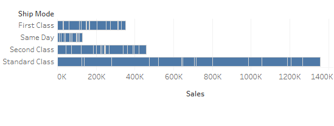

Data Visualization Lab 4.1
Sales Distribution Across States

Analysis: California, Texas, and New York have the most sales. Kansas, South Dakota, and Iowa have the least amount of sales. Higher sales tend to be in the higher populated areas.
Category Sales Comparison

Analysis: Technology has the highest sales followed by Furniture.
Monthly Sales Trend

Analysis: Months like November have a spike largely due to the fact that its around that time thats near Christmas as well as December too. September has a spike probably because of school sales since School starts up usually around that time.
Profit vs. Sales Analysis

Analysis: Tables have a high sales rate but negative profit as well as Bookcases and Supplies.
Sales by Shipping Mode
Analysis: Standard class shipping generates the most sales and same day generates the least. Companies should divert most of their energy to ensuring those customers' demands are met perfectly.